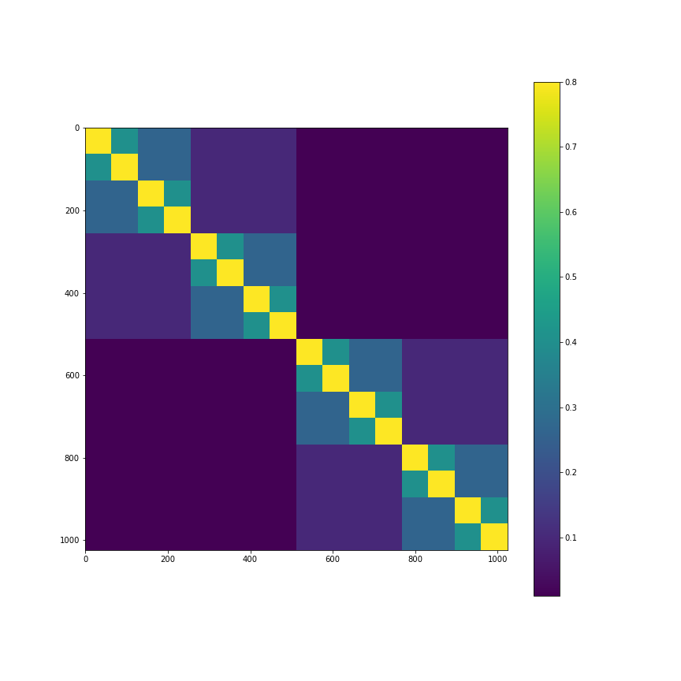
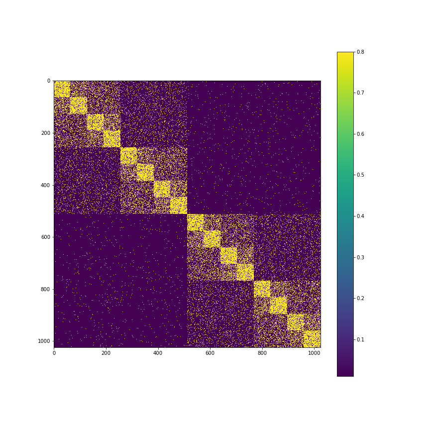
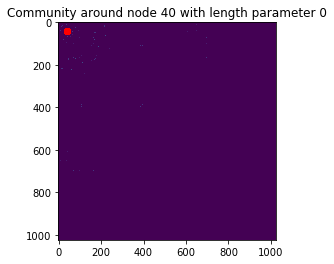
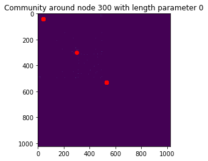
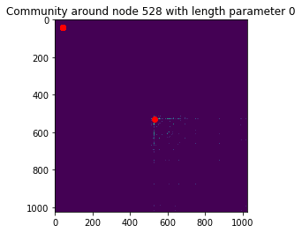

Background
Community detection is an important problem in unsupervised learning on networks.
There is no one single definition of "community" besides the notion that it is a subset of the graph having more connections between its members than between its members and non-subgraph nodes.
A central issue in unsupervised learning in general, and community detection specifically, is the absence of a ground truth knowledge of whether an estimated community is truly a community or not.
Conductance or related measures of community connectedness can be used to give a quantification of accuracy.
We suggest here using an ensemble of many randomly generated spanning trees to learn hierarchical clusterings of graphs.
By accumulating many trees into a single random forest, and leaning on the assumption that nodes closely connected in spanning trees sampled from the graph will have similar community structure, we produce a novel algorithm for community detection.
In addition to the challenging task of identifying communities around any given node of any given size, we can summarize global graph structural information using tools like the network conductance profile in O(nt) time where *n* is the number of vertices in the graph and *t* is the number of trees, the size of the forest.
Examples
Using a synthetic network which allows for a clearer understanding of the underlying graph structure, we provide demonstrations of the community structure, of varying sizes, centered around a given node. The gif's show how these communities grow as a function of size.
The first plot is the stochastic block model on which the graph is based. Then a realization of this graph, based on which uniform spanning trees are sampled is shown. After that are gif's demonstrating community detection prowess of this procedure
| Stochastic Block Model |
Observed Graph |
|  |
 |
| Node 40 |
Node 300 |
Node 528 |
|  |
 |
 |
Last modified: Mon Mar 29 11:58:00 2018